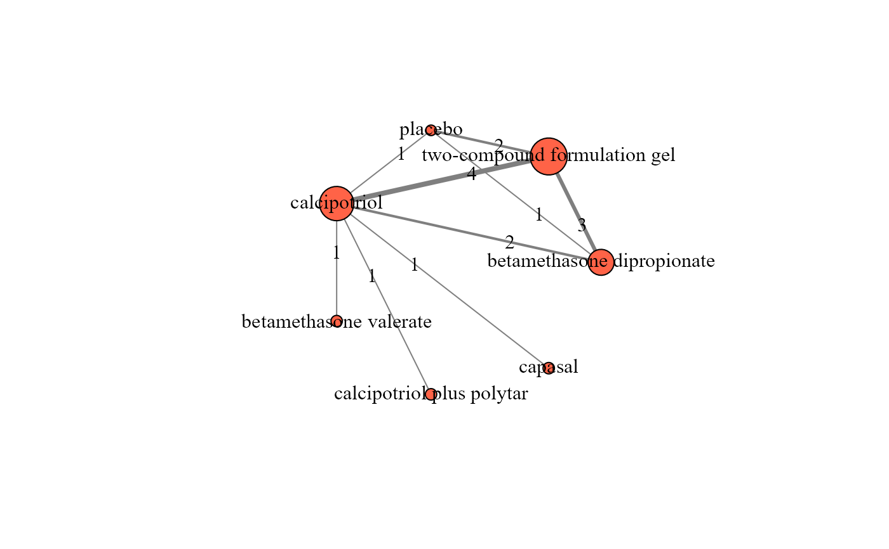

Illustrates the network plot for one outcome and summarises the characteristics of the evidence base.
netplot(data, drug_names, save_xls, ...)A data-frame of a one-trial-per-row format containing arm-level
data of each trial. See 'Format' in run_model.
A vector of labels with the name of the interventions in
the order they appear in the argument data. If drug_names is
not defined, the order of the interventions as they appear in data
is used, instead.
Logical to indicate whether to export the tabulated results
to an 'xlsx' file (via the write_xlsx
function of the R-package
writexl) at the working
directory of the user. The default is FALSE (do not export).
Additional arguments of the
nma.networkplot function of the
R-package pcnetmeta.
A network plot with coloured closed-loops informed by multi-arm
trials. Each node indicates an intervention and each edge an observed
pairwise comparison. The edge thickness is proportional to the number of
trials investigating the corresponding comparison, unless
specified otherwise (see
nma.networkplot function of the
R-package pcnetmeta).
The size of the node is weighted by the total number of
trials investigating the corresponding intervention, unless specified
otherwise (see nma.networkplot function of the R-package
pcnetmeta).
netplot also returns the following data-frames that describe the
evidence base:
The number of: interventions, possible comparisons, direct and indirect comparisons, number of trials in total, number of two-arm and multi-arm trials, number of randomised participants, and proportion of participants completing the trial (completers). When the outcome is binary, the number of trials with at least one zero event, and the number of trials with all zero events are also presented.
For each intervention, the number of trials, number of randomised participants, and proportion of completers. When the outcome is binary, the data-frame presents also the corresponding proportion of total observed events, the minimum, median and maximum proportion of observed events across the corresponding trials.
Identical structure to table_interventions
but for each observed comparison in the network.
netplot draws the network plot using the
nma.networkplot function
of the R-package
pcnetmeta.
The mtc.data.studyrow function of
the R-package hrefhttps://CRAN.R-project.org/package=gemtcgemtc is
additionally used to convert data from the required
one-trial-per-row format into the one-arm-per-row format.
Furthermore, netplot exports the data-frames to separate
'xlsx' files (via the write_xlsx function
of the R-package
writexl) at the working
directory of the user.
Lin L, Zhang J, Hodges JS, Chu H. Performing Arm-Based Network Meta-Analysis in R with the pcnetmeta Package. J Stat Softw 2017;80(5): 1--25. doi: 10.18637/jss.v080.i05
van Valkenhoef G, Kuiper J. gemtc: Network Meta-Analysis Using Bayesian Methods. R package version 1.0-1. 2021. https://CRAN.R-project.org/package=gemtc
data("nma.bottomley2011")
# Return the first six trials of the dataset
head(nma.bottomley2011)
#> study t1 t2 t3 t4 r1 r2 r3 r4 m1 m2 m3 m4 n1 n2 n3 n4
#> 1 Buckley, 2008 1 6 NA NA 67 79 NA NA 2 1 NA NA 110 108 NA NA
#> 2 Tyring, 2008 6 7 NA NA 74 12 NA NA 2 0 NA NA 135 42 NA NA
#> 3 Kragballe, 2009 3 6 NA NA 19 114 NA NA 9 2 NA NA 105 207 NA NA
#> 4 Luger, 2008 3 6 NA NA 101 196 NA NA 44 9 NA NA 431 419 NA NA
#> 5 Klaber, 1994 2 3 NA NA 175 138 NA NA 2 11 NA NA 234 240 NA NA
#> 6 Barrett, 2005 3 4 NA NA 79 79 NA NA 19 18 NA NA 225 236 NA NA
# The names of the interventions in the order they appear in the dataset
interv_names <- c("betamethasone dipropionate", "betamethasone valerate",
"calcipotriol", "calcipotriol plus polytar", "capasal",
"two-compound formulation gel", "placebo")
# Create the network plot
netplot(data = nma.bottomley2011,
drug_names = interv_names,
save_xls = FALSE)

#> $network_plot
#> NULL
#>
#> $network_description
#>
#>
#> |Characteristic |Total |
#> |:-----------------------------------|:-----|
#> |Interventions |7 |
#> |Possible comparisons |21 |
#> |Direct comparisons |9 |
#> |Indirect comparisons |12 |
#> |Trials |9 |
#> |Two-arm trials |7 |
#> |Multi-arm trials |2 |
#> |Randomised participants |5889 |
#> |Proportion of completers |96 |
#> |Proportion of observed events |47 |
#> |Trials with at least one zero event |0 |
#> |Trials with all zero events |0 |
#>
#> $table_interventions
#>
#>
#> |Interventions | Total trials| Total randomised| Completers (%)| Total events (%)| Min. events (%)| Median events (%)| Max. events (%)|
#> |:----------------------------|------------:|----------------:|--------------:|----------------:|---------------:|-----------------:|---------------:|
#> |betamethasone dipropionate | 3| 1229| 99| 54| 52| 55| 62|
#> |betamethasone valerate | 1| 234| 99| 75| 75| 75| 75|
#> |calcipotriol | 7| 1797| 92| 32| 20| 27| 60|
#> |calcipotriol plus polytar | 1| 236| 92| 36| 36| 36| 36|
#> |capasal | 1| 237| 93| 14| 14| 14| 14|
#> |two-compound formulation gel | 6| 1978| 99| 58| 48| 56| 74|
#> |placebo | 2| 178| 96| 19| 16| 22| 29|
#>
#> $table_comparisons
#>
#>
#> |Comparisons | Total trials| Total randomised| Completers (%)| Total events (%)| Min. events (%)| Median events (%)| Max. events (%)|
#> |:----------------------------------------------------------|------------:|----------------:|--------------:|----------------:|---------------:|-----------------:|---------------:|
#> |calcipotriol plus polytar vs calcipotriol | 1| 461| 92| 37| 37| 37| 37|
#> |calcipotriol vs betamethasone dipropionate | 2| 1677| 98| 45| 43| 45| 46|
#> |calcipotriol vs betamethasone valerate | 1| 474| 97| 68| 68| 68| 68|
#> |capasal vs calcipotriol | 1| 475| 89| 20| 20| 20| 20|
#> |placebo vs betamethasone dipropionate | 1| 692| 98| 48| 48| 48| 48|
#> |placebo vs calcipotriol | 1| 408| 93| 22| 22| 22| 22|
#> |placebo vs two-compound formulation gel | 2| 854| 98| 56| 49| 53| 58|
#> |two-compound formulation gel vs betamethasone dipropionate | 3| 2446| 99| 58| 53| 61| 68|
#> |two-compound formulation gel vs calcipotriol | 4| 2829| 96| 46| 37| 45| 54|
#>